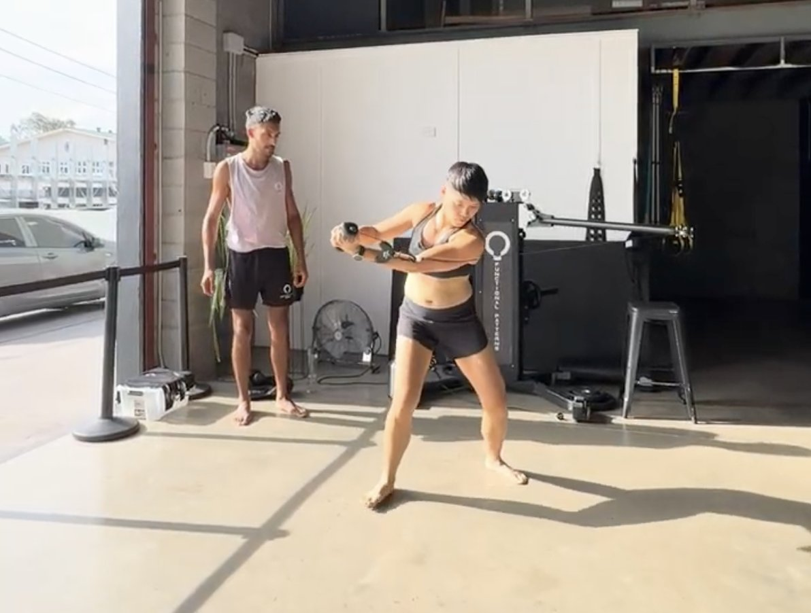
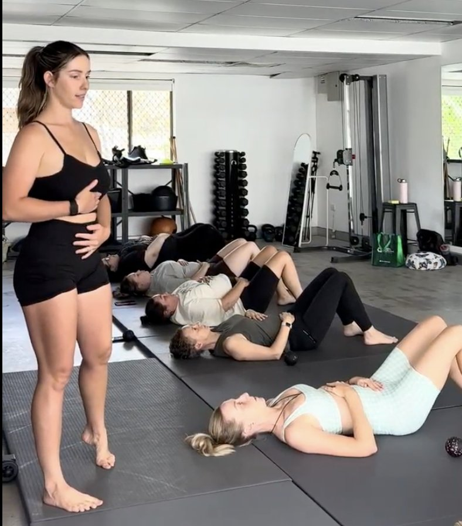

A Root-Cause Approach from Functional Patterns Brisbane
If you’ve been told you have a bulging disc, chances are you were also told some version of this:
-
“Rest until it settles”
-
“Strengthen your core”
-
“Stretch more”
-
“Manage it long term”
And yet — months or years later — you’re still dealing with pain, stiffness, flare-ups, or fear around movement.
The problem isn’t that you’re broken.
The problem is that the disc is rarely the real issue.
At Functional Patterns Brisbane, we take a different approach to bulging disc pain — one that focuses on why the disc was overloaded in the first place, not just how to calm symptoms.
What Is a Bulging Disc?
A bulging disc occurs when the outer layers of a spinal disc extend beyond their normal boundary. Unlike a disc herniation, the disc material hasn’t ruptured — it has simply changed shape under load.
This is important:
-
Disc bulges are extremely common
-
Many people with bulging discs have no pain at all
-
Disc changes are often found in people who feel perfectly fine
Which tells us something critical:
Structural findings on scans do not equal pain.

Can a Bulging Disc Heal Naturally?
This is one of the most common questions people ask — and the short answer is:
Yes, a bulging disc can heal or improve naturally — but only if the forces acting on it change.
Discs are living tissue. Like muscle, bone, or tendon, they adapt to the stresses placed upon them. If the spine continues to experience the same compression, asymmetry, and poor force distribution that created the bulge, the disc has no reason to remodel.
Healing doesn’t come from “pushing it back in.”
It comes from changing the way your body loads the spine every day.

Why Treating the Disc Alone Often Fails
Most conventional bulging disc treatments focus on the disc itself:
-
Rest and avoidance
-
Passive therapies
-
Generic strengthening
-
Injections for pain relief
These approaches may reduce symptoms temporarily, but they rarely address why the disc became overloaded.
Common issues we see:
-
Pain improves, then returns with activity
-
“Core exercises” increase compression and guarding
-
People become fearful of movement
-
Long-term dependence on treatment
The disc didn’t fail randomly.
It adapted to years of uneven force.

The Real Causes Behind Bulging Discs
From a Functional Patterns perspective, bulging discs are usually the output of poor global mechanics, not a local spinal failure.
Some of the most common drivers include:
1. Faulty Gait Mechanics
Walking is the most repeated movement you perform. If force isn’t transferring efficiently through the feet, hips, and trunk, the spine absorbs stress it was never designed to handle repeatedly.
2. Asymmetrical Load Distribution
Old injuries, postural habits, or dominant patterns can shift load to one side of the spine over thousands of steps per day.
3. Loss of Hip Function
When hips stop rotating and extending properly, the spine compensates — often through compression and shear.
4. Chronic Compression Patterns
Sitting, bracing, and “holding posture” all day reduces spinal variability and load tolerance over time.
5. Training That Doesn’t Match Human Movement
Isolated exercises performed without context can reinforce the same faulty patterns that caused the problem.
In short:
The spine is compensating for what the rest of the system isn’t doing.
Why Exercises Often Make Bulging Disc Pain Worse

Many people search for “L4 L5 disc bulge exercises” or “how to fix a bulging disc with exercise.”
The issue isn’t exercise — it’s random exercise selection.
Problems with generic exercise programs:
-
No assessment of how you move
-
No sequencing or progression
-
Reinforces existing asymmetries
-
Focuses on muscles instead of mechanics
Doing the “right” exercise at the wrong time can increase compression, irritation, and fear — even if it’s labelled as safe or corrective.
The Functional Patterns Approach to Healing a Bulging Disc Naturally
At Functional Patterns Brisbane, we don’t chase discs.
We restore how force moves through the body.
Our approach focuses on:
Rebuilding Gait
Gait is the foundation of spinal health. When walking mechanics improve, spinal loading improves automatically.
Restoring Force Distribution
We aim to reduce unnecessary spinal compression by improving how the hips, trunk, and feet share load.
Integrating the Whole Chain
The body works as a system. Local problems rarely have local solutions.
Progressive Load Tolerance
Healing isn’t about avoiding stress — it’s about reintroducing the right stress in the right way.
Nervous System Confidence
Fear and guarding increase compression. When movement feels safe again, the body adapts faster.
This is why many people notice improvements in daily activities — walking, standing, sleeping — before pain fully resolves.
What Natural Healing Actually Looks Like
Healing a bulging disc naturally is rarely linear.
Common experiences include:
-
Reduced pain frequency before intensity drops
-
Temporary flare-ups during adaptation
-
Improved confidence with movement
-
Gradual return of capacity
Pain disappearing overnight is not the goal.
Long-term resilience is.
Can a Slipped or Bulging Disc Heal on Its Own?
A disc may improve on its own if:
-
Load is reduced intelligently (not avoided entirely)
-
Movement patterns change
-
The body regains variability and capacity
However, if daily movement continues to reinforce the same stresses, the disc often stays irritated — even if symptoms fluctuate.
This is why many people feel “better but never normal.”
Preventing Disc Issues Long Term
True prevention isn’t about perfect posture or avoiding movement. It’s about:
-
Moving often and variably
-
Walking with better mechanics
-
Training that reflects real human movement
-
Reducing asymmetry over time
-
Avoiding over-medicalisation of normal adaptations
A resilient spine is built, not protected.
When to Seek Help
If you’ve:
-
Tried rest, physio, or generic exercise without lasting change
-
Been told your disc is “the problem”
-
Lost confidence in movement
-
Been managing flare-ups for years
It may be time to look beyond the disc itself.
Final Thoughts
Bulging discs are common.
Chronic disc pain doesn’t have to be.
When the forces acting on your body change, the tissues adapt — including the spine.
At Functional Patterns Brisbane, we focus on restoring how your body moves as a system, so healing becomes a natural outcome, not something you chase endlessly.
If you’re looking for a root-cause approach to bulging disc pain — not just symptom management — we’re here to help.